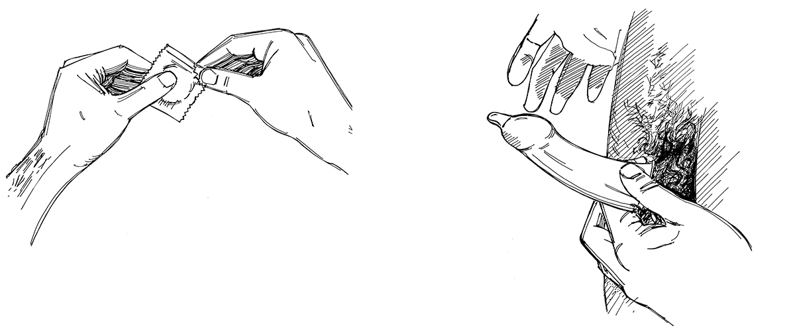

Overview
- Some diseases can be transmitted or passed from one person to another during sex, usually in semen, vaginal fluids or blood.
- “Sex” means any kind of oral, vaginal or anal sex, or sharing of sex toys.
- Having “safe sex” is about protecting yourself from diseases that can be transmitted during sexual activity.
Which diseases can be passed to another person through sex?
- Sexually transmitted infections (STIs) such as chlamydia, herpes, gonorrhoea, syphilis and HIV.
- Zika virus .
- Viral haemorrhagic fevers (Ebola , Marburg fever , Lassa fever ).
- During an outbreak of Zika, Ebola, Marburg fever, and Lassa fever, explain how the disease is transmitted through sex, and how to practise safe sex. Run social mobilization and behaviour change communication activities.
Remember that safe sex is only one way to prevent disease. It should not be the principal focus of your messages during an epidemic!
How to practise safe sex
- Use a male or female condom when having sex. Condoms are a barrier and block any infectious semen or fluid that may transmit an infection.
- Try other ways (instead of sexual intercourse) to be intimate with your partner.

Putting on a male condom
Key facts on Zika
- A pregnant woman can pass Zika to her unborn baby. It can cause severe brain defects in the baby.
- A man or woman who has Zika can pass Zika to his or her partner during sex for up to six months after acquiring the infection (whether they were sick and showed symptoms or not).
- If you are pregnant and live in an area where Zika is present, it is important to go to a health centre for a check-up and to discuss the risks. In general, it is best either not to have sex or to use condoms during the whole pregnancy.
- If you are planning a pregnancy and live in an area where Zika is present, it is important to discuss the risks, protect both partners from mosquito bites, and consider postponing the pregnancy until after the outbreak has ended.
See Zika, Disease tool 18 .
Key facts for Ebola, Marburg and Lassa
- Men who have recovered from Ebola, Marburg fever or Lassa fever can pass the disease on to another person during oral, vaginal or anal sex.
- Men who have recovered from Ebola or Marburg should use a condom for at least 12 months from when they got sick or until their semen tests negative twice for the virus.
- Men who have recovered from Lassa fever should use a condom for at least three months after they get better.
What you can do
- Make sure you understand the facts, and how diseases including Zika, Ebola, Marburg fever and Lassa fever can be transmitted through sex.
- Remember that sex can be a very sensitive, taboo or embarrassing topic for people to talk about. You may have to change your approach or way of communicating to get your messages across.
- Carry out social mobilization and behaviour change communication activities in an outbreak of Zika, Ebola, Marburg fever or Lassa fever. (See Important points above and Action tool 3 and 43 )
- Remember that sex is only one way of transmitting these diseases, and often it is not the main way. Talk to your volunteer coordination/team leader or local branch health office about which prevention methods should be emphasized during your community visits.
- Make sure you know and can demonstrate how to use a male and female condom correctly.